Rome was the final stop on our trip, and what a better place to end than in the capital city itself. We stayed in a perfect location that was central to
all of the main monuments, as well as some more minor attractions that we were able to experience. Rome definitely has a bigger city feel but it does not
hide it's ancient past, turn down any street and you will see ruins from a couple thousand years ago. the highlight of our Rome visit was definitely touring
the Vatican. The incredible architecture and artwork in the Vatican museums definitely lives up to the hype, and would make us return to Rome in an instant...
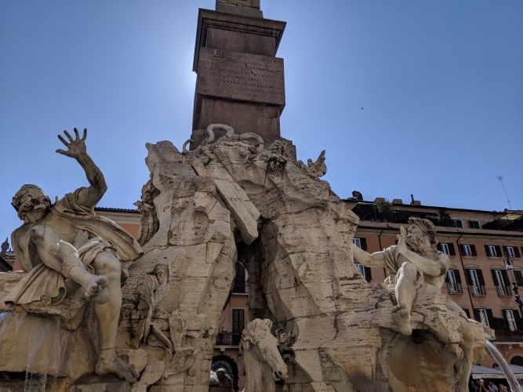
Renaissnace sculpture in Piazza Navona
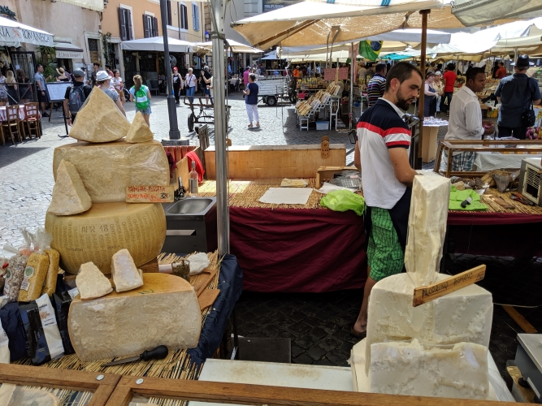
A look at a cheese vendor's selection in Campo Di Fiori
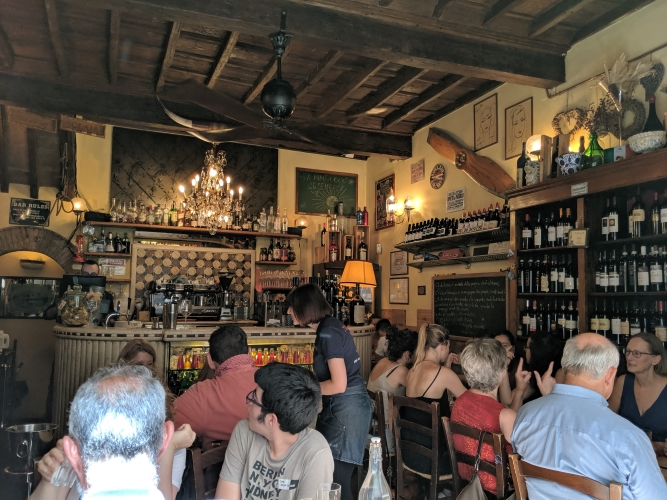
One of our best meals was had here at Mimi E Coco
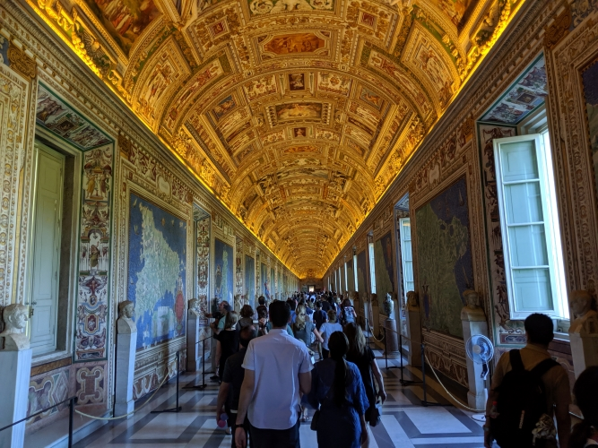
A stroll through the gallery of maps in the Vatican museum
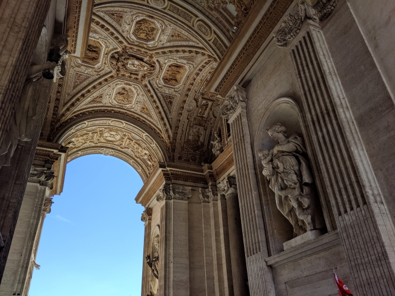
Vatican architecture in all it's grandeur
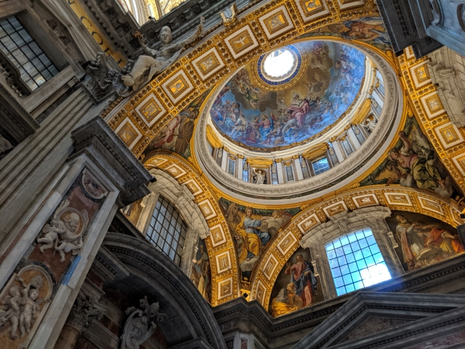
Ceiling of St. Peter's Basilica and it's numerous frescoes
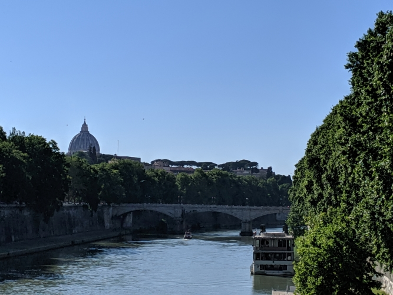
Classic view of Rome with the Tiber river and St. Peter's dome
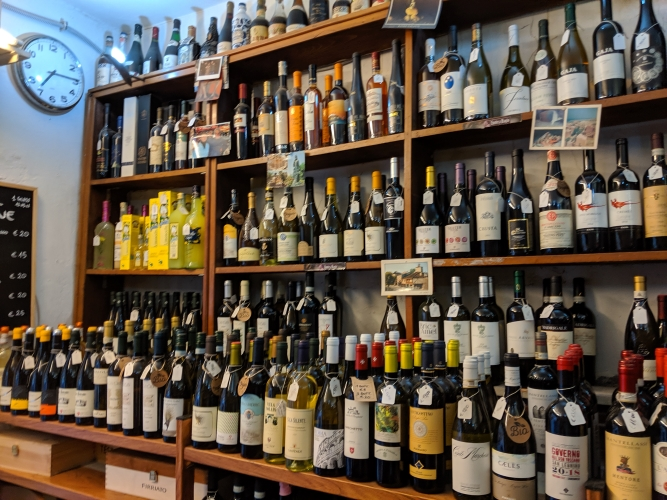
Quaint wine shop found in Trastevere, very good selection as well!
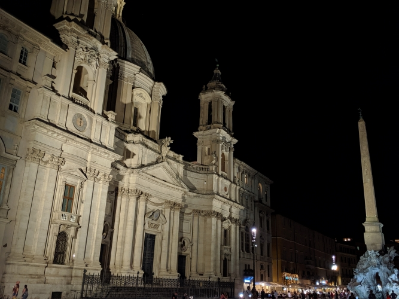
Night time shot in Piazza Navona, the architecure is truly surreal
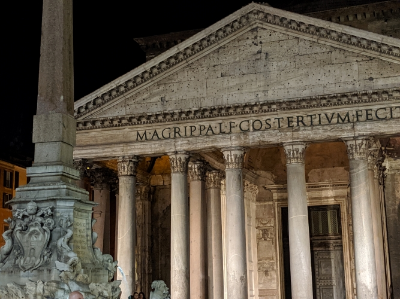
The Pantheon and this famous photo location, this time taken on a Pixel 3!
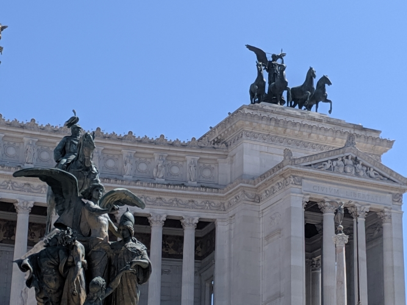
Close up of the Monument to Vittorio Emmanuele II
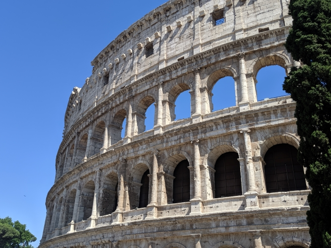
THe Coliseum. built nearly 2000 years ago and still standing